After your starting region
All three starting regions run out of new quests between level 25 and 28. The patron still pays well up to 50, so keep a mission running wherever you go, and use the Stone or a Scroll of Return to hand it in.
The Highlands, level 15 to 50
North of Krog, on the same land, lie Dawat, Arda, Ethera Palace, the Emporium Abbey and Parian. This is where most characters go next, and its first quests are worth doing long before you are done at home: they fight creatures of level 8 to 20 and give gear worn at 10 and 15.
Getting there. From Krog walk the road north to Dawat (bank 3093,3377, spawn gate 3094,3363). From the other towns take the portal to Lotor's Summer Palace and then either the Krog portal and the same road, or the Parian portal (it comes out at 3415,2919; Parian's spawn gate is at 3469,3025). The Highlands are not a safe zone: a death here wears your gear.
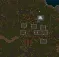
DawatAE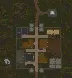
ArdaAE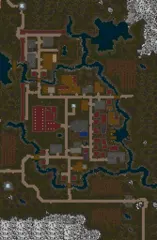
ParianAE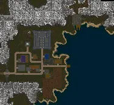
Ethera PalaceAE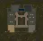
The Emporium AbbeyAE| Quest | Level | Starts with | What | Reward |
|---|---|---|---|---|
| Friend of the EarthAE Guides · Wiki | 12 to 18 | Kudah, by the spawn gate of Dawat | Four drops: a Poison Sac from Fire Ants (8), 3 Skeleton Toes from Skeletons (10) north of Krog, a pelt from Wargs (14), an Earthly Essence from Goblin Mystics (18) at Lake Dresta | Your choice of Terra Hood, Terra Gloves (+3 to all four, +4 Nature) or Terra Cloak (+4 to all four, +4 Nature), all wearable at 10 |
16 pictures of Friend of the Earth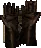 Terra GlovesAE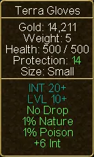 Terra Gloves (tooltip)AE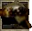 Terra HoodAE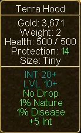 Terra Hood (tooltip)AE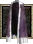 Terra CloakAE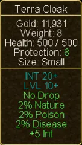 Terra Cloak (tooltip)AE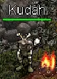 KudahAE Fire AntAE Fire AntAE Fire Ant (tooltip)AE Fire Ant (tooltip)AE SkeletonAE SkeletonAE Skeleton (tooltip)AE Skeleton (tooltip)AE WargAE WargAE Warg (tooltip)AEGoblin MysticAE Warg (tooltip)AEGoblin MysticAE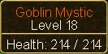 Goblin Mystic (tooltip)AE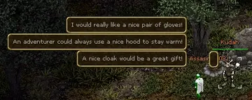 Which will it be?Wiki | ||||
| Hero of DawatAE Guides · Wiki | 15 to 20 | Shargar, by the spawn gate of Dawat | North-west of Dawat, in the marked area only: 50 Cultists (9), 75 Cult Leaders (16), 100 Thieves (16), then the boss Andreev the Quick (20, 800 health) | Hero of Dawat (amulet; +4 Str +4 Dex +6 Con +25 health, -2 Int, level 15), 4,250 gold in all, a great deal of experience |
13 pictures of Hero of Dawat | ||||
| Sweet ReliefAE Guides · Wiki | 15 to 25 | Sweetness, a talking rooster a little east of Dawat | No fighting: Diega in Loeband's Pub in Parian, a rose in Parian's north garden, back | Gloves of Sleight (+3 Dex +2 Con, level 15) |
| Lloyd the LoyalAE Guides · Wiki | 20 to 25 | Lloyd Dogen, east of Parian (3609,2997) | Explore the cave beside him, then 75 Astari Assassins (20) inside the Temple of Sabal | Experience only, and a lot of it for level 20 creatures |
| Haunted HouseAE Guides · Wiki | 22 to 26 | The Dawat Worker, by the river north-west of Dawat (2737,3306) | 50 Ghosts (23) at the building site | Experience |
| Pegi's PicnicAE Guides · Wiki | 25 to 35 | Pegi, in the middle of Ethera Palace | 100 Termigon Warriors (24) in the cave north-east of her; then the boss Umbergon (40, 2,500 health), who comes when Termigon Queens die | Pegi's Pendant (+2 Int +2 Con +15 health, no requirement), then Termigon Eye Ring (+3 to all four, +25 health, level 11) |
13 pictures of Pegi's PicnicCherry PieAE 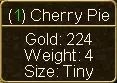 Cherry Pie (tooltip)AE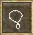 Pegis PendantAE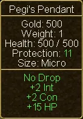 Pegis Pendant (tooltip)AE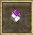 Termigon Eye RingAE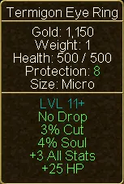 Termigon Eye Ring (tooltip)AEPegiAE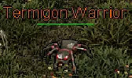 Termigon WarriorAE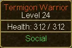 Termigon Warrior (tooltip)AE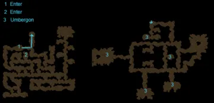 Ethera mine MapAEUmbergonAE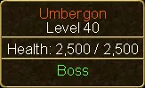 Umbergon (tooltip)AE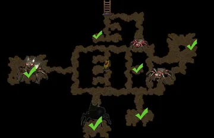 352x352pxWiki | ||||
| HookyAE Guides · Wiki | 33 to 38 | Bucky Brown, near the pub in north-east Arda | 100 Ogres (35) at the pond by Arda | Helm of Strength (+20 Str; needs level 35 and 56 Str) |
| Maid Nelly's LocketAE Guides · Wiki | 38 to 42 | Maid Nelly, top-left room of the Emporium Abbey | Minotaurs (40) near the Abbey until the locket drops. "Look elsewhere" means you left the area | Boots of the Traveller (+6 Str, +6 Int, +6 Dex, +20 health, faster walking, no level requirement) |
| Minotaur AmbushAE Guides · Wiki | 38 to 42 | The Ragged Traveller, at the front of the Abbey | 75 Minotaurs (40) north-east of the Abbey | 20 Potions of Greater Healing |
| Shovel TroubleAE Guides · Wiki | 40 to 45 | Jenn Talbot, Arda. Needs level 30 | Hobgoblins (49) north-west of Arda until the shovel drops | 10,000 gold |
| Valekar's FortressAE Guides · Wiki | 42 to 48 | Russel Pikeman, Arda | The fortress south of Dawat: a grave, 50 Spectral Orc Warriors (45), a red book | Glowing Belt (+2 Str +3 Dex, level 30) |
3 pictures of Valekar's Fortress | ||||
| TreasuresAE Guides · Wiki | 45 to 50 | Hapuna, Dawat. Needs level 40 | Ghost Willows (55) north of Dawat until a pendant drops | Hapuna's Treasure (+5 to all four, level 40) |
5 pictures of Treasures | ||||
| The Parian WarlordsWiki | 50 on | One of three warlords in Parian's hall, by your build. Needs level 50 | A long line of hunts from level 50 to 75 | First step: a Glowing Storage Crate (32 slots); then a full level 50 set |


Three of these deserve a word.
- Friend of the Earth is the best early quest in the game for a mage, and good for anyone. Nothing else gives +3 to every attribute at level 10. The wiki advises the hood or the gloves, since a better cloak comes sooner than a better hat.
- In Hero of Dawat, do not kill Andreev the Quick while you are still on the thieves. If he is not there when his turn comes, clear the thieves and come back in an hour. The kills only count inside the marked area.
- The Boots of the Traveller have no level requirement. A level 20 character cannot kill level 40 minotaurs, but a friend can, and they are the first boots that make you walk faster.
An order for level 20 to 50
| Level | Where | Why |
|---|---|---|
| 10 to 20 | Your starting region, with a trip to Dawat for Friend of the Earth | The patron pays most; the Terra piece is worn at 10 |
| 20 to 30 | Dawat and Parian; the best quests of the other two towns; Gulley's "Break In" (Thieves of level 16, 25,000 gold) | Creatures of 9 to 24; Parian's portal makes it a second home |
| 30 to 40 | Ethera Palace, Arda's ogres, the rest of Krythan (pirates at 25, Vrethpool at 22 to 33) | Ogres 35, Umbergon 40 |
| 40 to 50 | The same lands, on the Trading Mercenary's missions if you have Tides of Fate; the Abbey, Valekar's Fortress, the hobgoblins | Creatures of 40 to 55, and his missions pay best of all |
| 50 on | The Parian Warlords; then the expansions | See below |
Vrethpool around level 30
Head to Vrethpool (Vreth) around level 30 and pick up the Tal warrior and ettin quests. A veteran recommended this in game as an easy way to earn a useful early chunk of gold and a good necklace.
The rest of the world, in one table
Of the 339 quests in the game, 149 lie in regions a new character will not see for a long time. This is what they are, so that you know what you are not missing.
| Region | Towns | Needs | Levels | Worth knowing below 50 |
|---|---|---|---|---|
| Battle Plains | Chlera, Desprail | 50 to 100+ | Nothing | |
| Western Isles | Lotor's Summer Palace, Hell, the far islands | Mostly 100+ | "Love Lost": a corpse in the palace sewers, a walk, 500 gold. The faction quests (see below) | |
| Heartwood Coast | Valmond, Teylan | Talazar's Revenge | 45 to 70 | "Proof of Loyalty" (creatures 52 to 55) opens Farstead Keep and with it all of Tundria |
| Tundria | Farstead Keep, Hammerfist, Duremar | Talazar's Revenge | 60 to 100 | Nothing |
| Sands of Creation | Khafra, Rahura | Sands of Creation | 15 to 40 around Khafra, then 70 to 110 | "Snakes" in Khafra: 50 vipers of level 15 for gloves with +4 to all four, worn at 15 |
| Breakwater | Roycroft, Newtown, New Royale | Tides of Fate, and a boat | 25 to 45 in Roycroft, then 70 to 110 | In Roycroft: "Strange Behavior" (boots with +8 Str +8 Dex +5 Int +5 Con, no requirement, for level 25 goblins), "Fool's Errand" (an amulet with +8 Con +40 health for a delivery), "Half Empty or Half Full?" (a ship) |
| Broken Finger | A dungeon | A pass from the store | 105+ | Nothing |
The game's quest log sometimes shows a far higher or lower tier than a quest deserves, and it lets you take quests far too early. "Apprentice" on a quest whose boss is level 60 means nothing; look at what you fight.